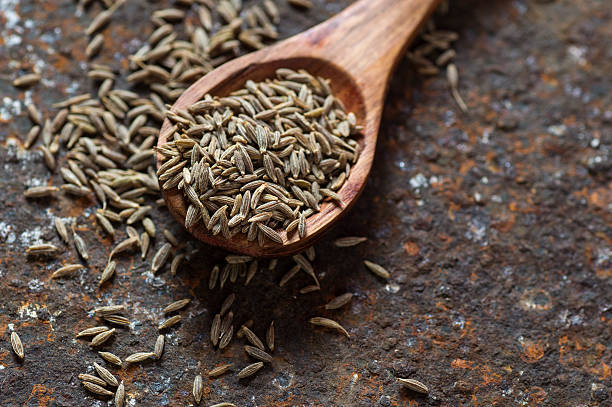

Growing bajra (pearl millet) involves several steps, from land preparation to harvest. Here's a detailed step-by-step guide:
1] Seed Selection and Planting: High-quality seeds are selected for planting, either by hand or using a mechanical planter. The seeds are planted in well-prepared soil, usually in rows.
2] Germination and Seedling Stage:
After planting, the bajra seeds germinate and grow into seedlings. During this stage, the seedlings require adequate moisture, warmth, and nutrients to establish a strong root system and develop healthy leaves.
3] Vegetative Growth:
Once the bajra plants have established a good root system, they focus on vegetative growth. The plants grow larger and develop more leaves and branches, which are important for photosynthesis and grain production. The plants are irrigated and fertilized regularly to promote healthy growth.
4] Flowering and Grain Formation:
After around 45-60 days of growth, the bajra plants start to produce flowers. The flowers are pollinated either by wind or self-pollination. After pollination, the flowers develop into grains, which are enclosed in a spike-like panicle.
5] Grain Maturation and Harvesting:
The grains take around 90-120 days to mature, during which time the grains inside the panicle grow and develop. The panicles change color from green to brown, indicating that they are fully mature. Jowar is usually harvested by cutting the panicles from the plant and threshing them to separate the grains from the plant material.
6] Post-harvest Processing:
After harvesting, the grains are cleaned and sorted to remove any debris or damaged grains. The grains can be used for food, animal feed, or biofuel production.
Overall, the growth of bajra involves a complex interplay of environmental factors such as temperature, moisture, and sunlight, as well as genetic factors that determine the plant's growth and development. Adequate water management, nutrient management, and pest control are crucial to ensure a healthy and productive crop.
తెలుగు
बाजरा (मोती बाजरा) उगाने में भूमि की तैयारी से लेकर कटाई तक कई चरण शामिल होते हैं। यहां एक विस्तृत चरण-दर-चरण मार्गदर्शिका दी गई है:
1] बीज चयन और रोपण: रोपण के लिए उच्च गुणवत्ता वाले बीजों का चयन किया जाता है, या तो हाथ से या यांत्रिक प्लांटर का उपयोग करके। बीज अच्छी तरह से तैयार मिट्टी में, आमतौर पर पंक्तियों में लगाए जाते हैं।
2] अंकुरण और अंकुरण चरण:
रोपण के बाद, बाजरे के बीज अंकुरित होते हैं और अंकुर बन जाते हैं। इस चरण के दौरान, पौधों को मजबूत जड़ प्रणाली स्थापित करने और स्वस्थ पत्तियां विकसित करने के लिए पर्याप्त नमी, गर्मी और पोषक तत्वों की आवश्यकता होती है।
3] वानस्पतिक विकास:
एक बार जब बाजरे के पौधों में अच्छी जड़ प्रणाली स्थापित हो जाती है, तो वे वानस्पतिक विकास पर ध्यान केंद्रित करते हैं। पौधे बड़े होते हैं और अधिक पत्तियाँ और शाखाएँ विकसित करते हैं, जो प्रकाश संश्लेषण और अनाज उत्पादन के लिए महत्वपूर्ण हैं। स्वस्थ विकास को बढ़ावा देने के लिए पौधों को नियमित रूप से सिंचित और उर्वरित किया जाता है।
4] फूल और अनाज का निर्माण:
लगभग 45-60 दिनों के विकास के बाद, बाजरे के पौधों में फूल आना शुरू हो जाते हैं। फूलों का परागण या तो हवा या स्व-परागण द्वारा होता है। परागण के बाद, फूल दानों में विकसित हो जाते हैं, जो स्पाइक जैसे पुष्पगुच्छ में घिरे होते हैं।
5] अनाज की परिपक्वता और कटाई:
दानों को परिपक्व होने में लगभग 90-120 दिन लगते हैं, इस दौरान पुष्पगुच्छ के अंदर के दाने बढ़ते और विकसित होते हैं। पुष्पगुच्छों का रंग हरे से भूरे में बदलता है, जो दर्शाता है कि वे पूरी तरह परिपक्व हैं। ज्वार की कटाई आमतौर पर पौधे से बालियों को काटकर और पौधों की सामग्री से अनाज को अलग करने के लिए उनकी थ्रेसिंग करके की जाती है।
6] फसल के बाद प्रसंस्करण:
कटाई के बाद, किसी भी मलबे या क्षतिग्रस्त अनाज को हटाने के लिए अनाज को साफ किया जाता है और छांटा जाता है। अनाज का उपयोग भोजन, पशु चारा, या जैव ईंधन उत्पादन के लिए किया जा सकता है।
कुल मिलाकर, बाजरे की वृद्धि में तापमान, नमी और सूरज की रोशनी जैसे पर्यावरणीय कारकों के साथ-साथ आनुवंशिक कारकों की एक जटिल परस्पर क्रिया शामिल होती है जो पौधे की वृद्धि और विकास को निर्धारित करते हैं। स्वस्थ और उत्पादक फसल सुनिश्चित करने के लिए पर्याप्त जल प्रबंधन, पोषक तत्व प्रबंधन और कीट नियंत्रण महत्वपूर्ण हैं।
వినండి
2. GREENGRAM / 2.हरा चना
ENGLISH
Growing green gram (moong) involves several steps, from land preparation to harvest. Here's a detailed step-by-step guide:
1] Seedling Stage:
Use high-quality, certified seeds of a suitable variety recommended for your region. Varieties like HHB 67, ICTP 8203, and RHB 121 are popular.
2] Vegetative Stage:
Once the seedlings are around 20 to 30 days old, they are transplanted into the field. During this stage, the plant grows vegetatively, which means it focuses on developing its leaves and stems. The plants are irrigated regularly, and nutrients are added to the soil to support healthy growth.
3] Reproductive Stage:
After around 60 to 70 days of growth, the plant enters the reproductive stage. The plant produces a stalk, and small flowers known as spikelets emerge. Pollination occurs when pollen from the male organs of the flower reaches the female organs, leading to the formation of green gram.
4] Grain Filling Stage:
Once the green gram seeds are formed, they begin to fill with starch, protein, and other nutrients. During this stage, the green gram diverts its energy towards the grains, and the grains start to grow and mature.
5] Harvesting Stage:
Green gram is ready for harvest about 60-70 days after sowing when the pods turn black or brown and the leaves start yellowing.
Store the dried grains in a cool, dry place. Use airtight containers or gunny bags and treat with neem leaves or other natural preservatives to prevent pest infestation.
తెలుగు
मूंग (मूंग) उगाने में भूमि की तैयारी से लेकर कटाई तक कई चरण शामिल होते हैं। यहां एक विस्तृत चरण-दर-चरण मार्गदर्शिका दी गई है:
1] अंकुर अवस्था:
अपने क्षेत्र के लिए अनुशंसित उपयुक्त किस्म के उच्च गुणवत्ता वाले, प्रमाणित बीजों का उपयोग करें। HHB 67, ICTP 8203, और RHB 121 जैसी किस्में लोकप्रिय हैं।
2] वनस्पति चरण:
एक बार जब पौधे लगभग 20 से 30 दिन के हो जाएं, तो उन्हें खेत में प्रत्यारोपित कर दिया जाता है। इस चरण के दौरान, पौधा वानस्पतिक रूप से बढ़ता है, जिसका अर्थ है कि यह अपनी पत्तियों और तनों के विकास पर ध्यान केंद्रित करता है। पौधों की नियमित रूप से सिंचाई की जाती है, और स्वस्थ विकास को समर्थन देने के लिए मिट्टी में पोषक तत्व मिलाए जाते हैं।
3] प्रजनन चरण:
विकास के लगभग 60 से 70 दिनों के बाद, पौधा प्रजनन चरण में प्रवेश करता है। पौधा एक डंठल पैदा करता है, और छोटे फूल निकलते हैं जिन्हें स्पाइकलेट के नाम से जाना जाता है। परागण तब होता है जब फूल के नर अंगों से पराग मादा अंगों तक पहुंचता है, जिससे हरे चने का निर्माण होता है।
4] अनाज भरने का चरण:
एक बार जब हरे चने के बीज बन जाते हैं, तो वे स्टार्च, प्रोटीन और अन्य पोषक तत्वों से भरने लगते हैं। इस चरण के दौरान, हरा चना अपनी ऊर्जा को दानों की ओर मोड़ देता है, और दाने बढ़ने और परिपक्व होने लगते हैं।
5] कटाई चरण:
मूंग की फसल बुआई के लगभग 60-70 दिन बाद कटाई के लिए तैयार हो जाती है, जब फलियाँ काली या भूरी हो जाती हैं और पत्तियाँ पीली पड़ने लगती हैं।
सूखे अनाज को ठंडी, सूखी जगह पर रखें। कीटों के संक्रमण को रोकने के लिए वायुरोधी कंटेनरों या बोरियों का उपयोग करें और नीम की पत्तियों या अन्य प्राकृतिक परिरक्षकों से उपचार करें।
వినండి
3. MOTHBEANS / 3.मोथबीन
ENGLISH
Growing moth beans (Vigna aconitifolia), also known as matki, involves several key steps.
This crop is well-suited for arid and semi-arid regions due to its drought tolerance. Here is a step-by-step guide to growing moth beans:
1] Planting:
Moth bean is typically planted as a seed in well-prepared soil, either by hand or by using a mechanical planter. The seeds are planted in rows, and the soil is carefully irrigated to ensure that the seeds germinate.
2] Germination and Seedling Stage:
After planting, the moth seeds germinate and grow into seedlings. During this stage, the seedlings require adequate moisture, warmth, and nutrients to establish a strong root system and develop healthy leaves.
3] Vegetative Growth:
Once the moth plants have established a good root system, they focus on vegetative growth. The plants grow larger and develop more leaves and branches, which are important for photosynthesis and fiber production. The plants are irrigated and fertilized regularly to promote healthy growth.
4] Flowering and Fruit Formation:
After around 6-8 weeks of growth, the moth plants start to produce flowers. The flowers are pollinated either by bees or self-pollination. After pollination, the flowers develop into bolls, which contain the moth seeds.
5] Weed Control:
Control weeds by manual weeding or using pre-emergence herbicides like Pendimethalin at 0.5-1.0 kg/ha within 2-3 days of sowing.
6] Harvesting:
Harvest the plants by cutting them at the base using a sickle and let them dry in the field for a few days.
By following these steps, you can effectively grow and harvest a healthy crop of moth beans.
తెలుగు
मोथ बीन्स (विग्ना एकोनिटिफोलिया), जिसे मटकी भी कहा जाता है, उगाने में कई महत्वपूर्ण चरण शामिल हैं।
सूखा सहन करने की क्षमता के कारण यह फसल शुष्क और अर्ध-शुष्क क्षेत्रों के लिए उपयुक्त है। यहां मोथ बीन्स उगाने के लिए चरण-दर-चरण मार्गदर्शिका दी गई है:
1] रोपण:
मोठ बीन को आम तौर पर अच्छी तरह से तैयार मिट्टी में बीज के रूप में या तो हाथ से या यांत्रिक प्लांटर का उपयोग करके लगाया जाता है। बीज पंक्तियों में लगाए जाते हैं, और यह सुनिश्चित करने के लिए कि बीज अंकुरित हों, मिट्टी की सावधानीपूर्वक सिंचाई की जाती है।
2] अंकुरण और अंकुरण चरण:
रोपण के बाद, कीट के बीज अंकुरित होते हैं और अंकुर बन जाते हैं। इस चरण के दौरान, पौधों को मजबूत जड़ प्रणाली स्थापित करने और स्वस्थ पत्तियां विकसित करने के लिए पर्याप्त नमी, गर्मी और पोषक तत्वों की आवश्यकता होती है।
3] वानस्पतिक विकास:
एक बार जब पतंगे के पौधे एक अच्छी जड़ प्रणाली स्थापित कर लेते हैं, तो वे वानस्पतिक विकास पर ध्यान केंद्रित करते हैं। पौधे बड़े होते हैं और अधिक पत्तियाँ और शाखाएँ विकसित करते हैं, जो प्रकाश संश्लेषण और फाइबर उत्पादन के लिए महत्वपूर्ण हैं। स्वस्थ विकास को बढ़ावा देने के लिए पौधों को नियमित रूप से सिंचित और उर्वरित किया जाता है।
4] फूल और फल निर्माण:
विकास के लगभग 6-8 सप्ताह के बाद, पतंगे के पौधे फूल पैदा करना शुरू कर देते हैं। फूलों का परागण या तो मधुमक्खियों द्वारा या स्वपरागण द्वारा होता है। परागण के बाद, फूल बीजकोष में विकसित हो जाते हैं, जिनमें कीट के बीज होते हैं।
5] खरपतवार नियंत्रण:
हाथ से निराई-गुड़ाई करके या बुआई के 2-3 दिनों के भीतर 0.5-1.0 किलोग्राम/हेक्टेयर की दर से पेंडिमेथालिन जैसे उभरने वाले शाकनाशी का उपयोग करके खरपतवारों को नियंत्रित करें।
6] कटाई:
पौधों को आधार से काटकर हंसिये से काट लें और कुछ दिनों के लिए खेत में सूखने दें।
इन चरणों का पालन करके, आप प्रभावी ढंग से मोठ फलियों की एक स्वस्थ फसल उगा सकते हैं और काट सकते हैं।
వినండి
4. CLUSTERBEAN / 4.क्लस्टरबीन
ENGLISH
Growing cluster beans (guar) involves several key steps to ensure a healthy and productive crop. Here's a detailed step-by-step guide to growing cluster beans:
1] Seed Germination:
Cluster bean seeds are sown in the soil, and with the help of water and warmth, they start to sprout. The seedling emerges from the seed and develops roots and shoots.
2] Vegetative Growth:
During this stage, the cluster bean grows vegetatively, which means it focuses on developing its stems, leaves, and roots. The leaves of the plant absorb sunlight and convert it into energy through the process of photosynthesis, which is used to produce new cells and tissues.
3] Reproductive Growth:
This stage begins when the plant reaches maturity, which usually takes around 100 to 120 days after planting. The plant starts to produce flowers, which contain male and female reproductive organs. Pollination occurs when pollen from the male organ reaches the female organ, leading to the formation of the bean.
4] Grain Development:
Once the cluster bean is formed, it begins to develop. The plant diverts its energy towards the grain, and it begins to grow and fill with starch, protein, and other nutrients.
5] Harvest:
Harvest the pods by hand-picking them when they are tender. Multiple pickings may be required as the pods mature at different times.
By following these steps, you can effectively grow and harvest a healthy crop of cluster beans.
తెలుగు
स्वस्थ और उत्पादक फसल सुनिश्चित करने के लिए क्लस्टर बीन्स (ग्वार) उगाने में कई महत्वपूर्ण कदम शामिल हैं। यहां क्लस्टर बीन्स उगाने के लिए एक विस्तृत चरण-दर-चरण मार्गदर्शिका दी गई है:
1] बीज अंकुरण:
ग्वारपाठे के बीज मिट्टी में बोए जाते हैं और पानी और गर्मी की मदद से वे अंकुरित होने लगते हैं। अंकुर बीज से निकलता है और जड़ें और अंकुर विकसित करता है।
2] वानस्पतिक विकास:
इस चरण के दौरान, क्लस्टर बीन वानस्पतिक रूप से बढ़ता है, जिसका अर्थ है कि यह अपने तने, पत्तियों और जड़ों को विकसित करने पर ध्यान केंद्रित करता है। पौधे की पत्तियाँ सूर्य के प्रकाश को अवशोषित करती हैं और प्रकाश संश्लेषण की प्रक्रिया के माध्यम से इसे ऊर्जा में परिवर्तित करती हैं, जिसका उपयोग नई कोशिकाओं और ऊतकों के निर्माण के लिए किया जाता है।
3] प्रजनन वृद्धि:
यह चरण तब शुरू होता है जब पौधा परिपक्व हो जाता है, जिसमें आमतौर पर रोपण के बाद लगभग 100 से 120 दिन लगते हैं। पौधा फूल पैदा करना शुरू कर देता है, जिसमें नर और मादा प्रजनन अंग होते हैं। परागण तब होता है जब नर अंग से पराग मादा अंग तक पहुंचता है, जिससे बीन का निर्माण होता है।
4] अनाज विकास:
एक बार जब क्लस्टर बीन बन जाता है, तो इसका विकास शुरू हो जाता है। पौधा अपनी ऊर्जा को अनाज की ओर मोड़ता है, और यह बढ़ने लगता है और स्टार्च, प्रोटीन और अन्य पोषक तत्वों से भरने लगता है।
5] फसल:
जब फलियाँ नरम हो जाएँ तो उन्हें हाथ से चुनकर तोड़ लें। फलियाँ अलग-अलग समय पर परिपक्व होने के कारण एकाधिक तुड़ाई की आवश्यकता हो सकती है।
इन चरणों का पालन करके, आप प्रभावी ढंग से क्लस्टर बीन्स की एक स्वस्थ फसल उगा सकते हैं और काट सकते हैं।
వినండి
5. SESAME / 5.तिल
ENGLISH
Growing sesame (Sesamum indicum) involves several steps from land preparation to harvesting. Sesame is a drought-tolerant crop that thrives in hot climates and well-drained soils. Here is a detailed step-by-step guide for growing sesame:
1] Soil preparation:
sesame grows best in well-drained soil with a pH of 6.0-7.5. The soil should be tilled to a depth of 6-8 inches and any weeds or rocks removed.
2] Planting:
Sesame is usually planted in the spring, after the danger of frost has passed. The seeds should be planted 1-2 inches deep, in rows that are 30-36 inches apart.
3] Germination:
The sesame seed will germinate within 7-10 days, provided the soil is moist and the temperature is warm enough. The seed will send out a small root and a shoot, which will eventually grow into the sesame plant.
4] Growth:
The sesame plant will continue to grow, developing leaves and stalks.
5] Seed Treatment:
Treat the seeds with fungicides like Thiram or Carbendazim at 2-3 g/kg of seed to protect against soil-borne diseases. Optionally, treat seeds with Azospirillum and Phosphobacterium cultures to enhance growth and yield.
6] Initial Irrigation:
Provide light irrigation after sowing if there is no rain to ensure seed germination.
7] Harvesting:
Cut the plants at the base using a sickle and let them dry in the field for a few days.
Store the dried seeds in a cool, dry place. Use airtight containers or gunny bags and treat with neem leaves or other natural preservatives to prevent pest infestation.
తెలుగు
तिल (सेसमम इंडिकम) उगाने में भूमि की तैयारी से लेकर कटाई तक कई चरण शामिल होते हैं। तिल एक सूखा-सहिष्णु फसल है जो गर्म जलवायु और अच्छी जल निकासी वाली मिट्टी में पनपती है। यहां तिल उगाने के लिए एक विस्तृत चरण-दर-चरण मार्गदर्शिका दी गई है:
1] मिट्टी की तैयारी:
तिल 6.0-7.5 पीएच वाली अच्छी जल निकास वाली मिट्टी में सबसे अच्छा उगता है। मिट्टी को 6-8 इंच की गहराई तक जोता जाना चाहिए और किसी भी खरपतवार या चट्टान को हटा देना चाहिए।
2] रोपण:
तिल आमतौर पर वसंत ऋतु में लगाया जाता है, जब पाले का खतरा टल जाता है। बीजों को 1-2 इंच गहराई में, 30-36 इंच की दूरी वाली पंक्तियों में बोना चाहिए।
3] अंकुरण:
तिल के बीज 7-10 दिनों के भीतर अंकुरित हो जाएंगे, बशर्ते मिट्टी नम हो और तापमान पर्याप्त गर्म हो। बीज से एक छोटी जड़ और एक अंकुर निकलेगा, जो अंततः तिल के पौधे में विकसित होगा।
4] विकास:
तिल का पौधा बढ़ता रहेगा, पत्तियां और डंठल विकसित होंगे।
5] बीज उपचार:
मिट्टी से होने वाली बीमारियों से बचाने के लिए बीजों को 2-3 ग्राम/किलो बीज की दर से थीरम या कार्बेन्डाजिम जैसे फफूंदनाशकों से उपचारित करें। वैकल्पिक रूप से, विकास और उपज बढ़ाने के लिए बीजों को एज़ोस्पिरिलम और फॉस्फोबैक्टीरियम कल्चर से उपचारित करें।
6] प्रारंभिक सिंचाई:
बीज के अंकुरण को सुनिश्चित करने के लिए यदि बारिश न हो तो बुआई के बाद हल्की सिंचाई करें।
7] कटाई:
पौधों को दरांती से आधार से काटें और कुछ दिनों के लिए खेत में सूखने दें।
सूखे बीजों को ठंडी, सूखी जगह पर रखें। कीटों के संक्रमण को रोकने के लिए वायुरोधी कंटेनरों या बोरियों का उपयोग करें और नीम की पत्तियों या अन्य प्राकृतिक परिरक्षकों से उपचार करें।
వినండి
6. CUMIN / 6.जीरा

ENGLISH
Growing cumin (Cuminum cyminum) involves several steps to ensure a healthy and productive crop. Cumin is a warm-season crop that thrives in well-drained sandy loam soils. Here is a detailed step-by-step guide to growing cumin:
1] Seedling Stage:
Start by choosing high-quality cumin seeds from a reliable source. Ensure that the seeds are viable and free from disease.
2] Sowing Seeds:
Cumin seeds can be sown directly into the soil or started indoors in trays and transplanted later. If sowing directly, plant the seeds about 1/4 to 1/2 inch deep and space them 4-6 inches apart in rows that are 18-24 inches apart.
3] Vegetative Growth:
During the vegetative growth stage, the cumin plant focuses on developing leaves, stems, and roots. The plants require ample sunlight, water, and nutrients, and they are fertilized with a balanced fertilizer regularly. The plants are also pruned to promote branching and increase yields.
4] Fertilizing::
Cumin plants benefit from a balanced fertilizer applied during the growing season. Follow the instructions on the fertilizer package for application rates and frequency.
5] Harvesting:
Cumin plants typically mature in about 3-4 months. Harvest the seeds once the plants have turned brown and dried up. Cut the stems near the base and hang them upside down in a well-ventilated area to dry further. Once dry, thresh the seeds to separate them from the stems and store them in a cool, dry place.
Following these steps should help you successfully grow cumin and harvest a flavorful crop.
తెలుగు
जीरा (क्Uमिनम साइमिनम) उगाने में स्वस्थ और उत्पादक फसल सुनिश्चित करने के लिए कई चरण शामिल होते हैं। जीरा एक गर्म मौसम की फसल है जो अच्छी जल निकासी वाली रेतीली दोमट मिट्टी में उगती है। यहां जीरा उगाने के लिए एक विस्तृत चरण-दर-चरण मार्गदर्शिका दी गई है:
1] अंकुर चरण:
किसी विश्वसनीय स्रोत से उच्च गुणवत्ता वाला जीरा चुनकर शुरुआत करें। सुनिश्चित करें कि बीज व्यवहार्य और बीमारी से मुक्त हैं।
2] बीज बोना:
जीरे को सीधे मिट्टी में बोया जा सकता है या घर के अंदर ट्रे में बोया जा सकता है और बाद में रोपाई की जा सकती है। यदि सीधे बुआई करते हैं, तो बीज लगभग 1/4 से 1/2 इंच गहराई में रोपें और उन्हें 18-24 इंच की पंक्तियों में 4-6 इंच की दूरी पर रखें।
3] वानस्पतिक विकास:
वानस्पतिक विकास चरण के दौरान, जीरा का पौधा पत्तियों, तनों और जड़ों के विकास पर ध्यान केंद्रित करता है। पौधों को पर्याप्त धूप, पानी और पोषक तत्वों की आवश्यकता होती है, और उन्हें नियमित रूप से संतुलित उर्वरक दिया जाता है। शाखाओं को बढ़ावा देने और पैदावार बढ़ाने के लिए पौधों की छंटाई भी की जाती है।
4] उर्वरक::
बढ़ते मौसम के दौरान लगाए गए संतुलित उर्वरक से जीरे के पौधों को फायदा होता है। आवेदन दर और आवृत्ति के लिए उर्वरक पैकेज पर दिए गए निर्देशों का पालन करें।
5] कटाई:
जीरे के पौधे आमतौर पर लगभग 3-4 महीने में पक जाते हैं। जब पौधे भूरे हो जाएं और सूख जाएं तो बीजों की कटाई कर लें। आधार के पास तनों को काटें और आगे सूखने के लिए उन्हें अच्छी तरह हवादार क्षेत्र में उल्टा लटका दें। एक बार सूख जाने पर, बीजों को पीसकर तनों से अलग कर लें और उन्हें ठंडी, सूखी जगह पर रख दें।
इन चरणों का पालन करने से आपको सफलतापूर्वक जीरा उगाने और एक स्वादिष्ट फसल काटने में मदद मिलेगी।
వినండి
7. FENUGREEK / 7.मेंथी
ENGLISH
Here's a step-by-step guide to growing fenugreek:
1] Seed Selection:
Choose high-quality fenugreek seeds from a reputable source. Look for seeds that are plump, firm, and free from any signs of damage or disease.
2] Sowing seeds:
Fenugreek seeds can be sown directly into the soil. Plant the seeds about 1/4 to 1/2 inch deep and space them 2-3 inches apart in rows that are 12-18 inches apart. You can also sow fenugreek in containers or raised beds.
3] Watering:
Keep the soil evenly moist but not waterlogged after sowing. Fenugreek plants require regular watering, especially during dry periods. Avoid overhead watering to prevent fungal diseases.
4] Thinning Seedlings:
If you've sown seeds densely, thin out the seedlings once they have a few true leaves. Leave the strongest and healthiest plants spaced appropriately to allow for proper growth.
5] Fertilizing
Fenugreek plants don't usually require heavy fertilization if the soil is well-prepared. However, you can apply a balanced fertilizer according to package instructions if needed.
6] Harvesting:
Fenugreek leaves can be harvested when they are young and tender, usually about 3-4 weeks after planting. Use scissors to cut the leaves, leaving some growth for regrowth. For fenugreek seeds, wait until the plants have produced pods that turn yellow-brown and start to dry. Harvest the pods and thresh them to remove the seeds.
By following these steps, you can successfully grow fenugreek and enjoy its fresh leaves and aromatic seeds.
తెలుగు
यहां मेथी उगाने के लिए चरण-दर-चरण मार्गदर्शिका दी गई है:
1] बीज चयन:
किसी प्रतिष्ठित स्रोत से उच्च गुणवत्ता वाले मेथी के बीज चुनें। ऐसे बीजों की तलाश करें जो मोटे, मजबूत हों और क्षति या बीमारी के किसी भी लक्षण से मुक्त हों।
2] बीज बोना:
मेथी के बीजों को सीधे मिट्टी में बोया जा सकता है। बीज लगभग 1/4 से 1/2 इंच गहराई में रोपें और उन्हें 12-18 इंच की पंक्तियों में 2-3 इंच की दूरी पर रखें। आप मेथी को कंटेनरों या ऊंची क्यारियों में भी बो सकते हैं।
3] पानी देना:
बुआई के बाद मिट्टी को समान रूप से नम रखें लेकिन जल भराव न रखें। मेथी के पौधों को नियमित रूप से पानी देने की आवश्यकता होती है, खासकर शुष्क अवधि के दौरान। फंगल रोगों से बचने के लिए सिर के ऊपर पानी देने से बचें।
4] पौधों का पतला होना:
यदि आपने बीज सघन रूप से बोए हैं, तो कुछ वास्तविक पत्तियाँ आने पर अंकुरों को पतला कर दें। उचित विकास के लिए सबसे मजबूत और स्वस्थ पौधों को उचित दूरी पर छोड़ें।
5] उर्वरक
यदि मिट्टी अच्छी तरह से तैयार हो तो मेथी के पौधों को आमतौर पर भारी उर्वरक की आवश्यकता नहीं होती है। हालाँकि, यदि आवश्यक हो तो आप पैकेज निर्देशों के अनुसार संतुलित उर्वरक लगा सकते हैं।
6] कटाई:
मेथी की पत्तियों की कटाई तब की जा सकती है जब वे छोटी और कोमल हों, आमतौर पर रोपण के लगभग 3-4 सप्ताह बाद। पत्तियों को काटने के लिए कैंची का उपयोग करें, कुछ वृद्धि को दोबारा बढ़ने के लिए छोड़ दें। मेथी के बीज के लिए, तब तक प्रतीक्षा करें जब तक कि पौधों में फलियाँ न आ जाएँ जो पीली-भूरी हो जाएँ और सूखने लगें। फलियों को तोड़ें और बीज निकालने के लिए उन्हें मथें।
इन चरणों का पालन करके, आप मेथी को सफलतापूर्वक उगा सकते हैं और इसकी ताजी पत्तियों और सुगंधित बीजों का आनंद ले सकते हैं।
వినండి
8. PSYLLIUM HUSK / 8.सैलियम भूसी
ENGLISH
Psyllium husk, also known as isabgol, is derived from the seeds of the Plantago ovata plant. Here's a step-by-step guide to growing psyllium husk:
1] Seed Selection and Planting:
Obtain high-quality psyllium seeds from a reliable source. Make sure the seeds are fresh and viable for planting.
2] Sowing Seeds:
Psyllium seeds can be sown directly into the soil. Plant the seeds about 1/4 to 1/2 inch deep and space them 6-8 inches apart in rows that are 12-18 inches apart. Firm the soil gently after planting.
3] Watering:
Keep the soil evenly moist after sowing. Water the seeds gently to avoid disturbing them. Psyllium plants require regular watering, especially during dry periods, but be cautious not to overwater as this can lead to root rot.
4] Thinning Seedlings:
If the psyllium seeds germinate densely, thin out the seedlings once they have a few true leaves. Leave the strongest and healthiest plants spaced appropriately to allow for proper growth.
5] Pest and Disease management:
Monitor your psyllium plants for pests and diseases. Common pests may include aphids or grasshoppers. Use organic pest control methods as needed. Psyllium plants are relatively resistant to diseases.
6] harvesting:
Psyllium plants typically mature in about 3-4 months. Harvest the seeds when the seed pods turn brown and dry. Cut the stems near the base and collect the seed pods. Thresh the pods to extract the psyllium seeds.
తెలుగు
साइलियम भूसी, जिसे इसबगोल भी कहा जाता है, प्लांटैगो ओवाटा पौधे के बीज से प्राप्त होती है। यहां साइलियम भूसी उगाने के लिए चरण-दर-चरण मार्गदर्शिका दी गई है:
1] बीज चयन और रोपण:
किसी विश्वसनीय स्रोत से उच्च गुणवत्ता वाले साइलियम बीज प्राप्त करें। सुनिश्चित करें कि बीज ताजा और रोपण के लिए उपयुक्त हों।
2] बीज बोना:
साइलियम के बीज सीधे मिट्टी में बोए जा सकते हैं। बीज लगभग 1/4 से 1/2 इंच गहराई में रोपें और उन्हें 12-18 इंच की पंक्तियों में 6-8 इंच की दूरी पर रखें। रोपण के बाद मिट्टी को धीरे से मजबूत करें।
3] पानी देना:
बुआई के बाद मिट्टी को समान रूप से नम रखें। बीजों को परेशान होने से बचाने के लिए उन्हें धीरे से पानी दें। साइलियम के पौधों को नियमित रूप से पानी देने की आवश्यकता होती है, विशेष रूप से शुष्क अवधि के दौरान, लेकिन सावधान रहें कि अधिक पानी न दें क्योंकि इससे जड़ें सड़ सकती हैं।
4] पौधों का पतला होना:
यदि साइलियम के बीज सघन रूप से अंकुरित होते हैं, तो कुछ असली पत्तियाँ आने पर अंकुरों को पतला कर दें। उचित विकास के लिए सबसे मजबूत और स्वस्थ पौधों को उचित दूरी पर छोड़ें।
5] कीट और रोग प्रबंधन:
कीटों और बीमारियों के लिए अपने साइलियम पौधों की निगरानी करें। सामान्य कीटों में एफिड्स या टिड्डे शामिल हो सकते हैं। आवश्यकतानुसार जैविक कीट नियंत्रण विधियों का प्रयोग करें। साइलियम के पौधे अपेक्षाकृत रोगों के प्रति प्रतिरोधी होते हैं।
6] कटाई:
साइलियम के पौधे आमतौर पर लगभग 3-4 महीनों में परिपक्व हो जाते हैं। जब बीज की फलियां भूरी हो जाएं और सूख जाएं तो बीज तोड़ लें। आधार के पास तनों को काटें और बीज की फलियाँ इकट्ठा करें। साइलियम के बीज निकालने के लिए फलियों को पीस लें।
వినండి
9. SAFFLOWER / 9.कुसुम
ENGLISH
Here's a step-by-step guide to growing safflower:
1] Soil preparation:
Prepare the soil by loosening it to a depth of about 6-8 inches. Remove any weeds, rocks, or debris from the planting area. Safflower prefers slightly acidic to neutral soil with good drainage.
2] Sowing Seeds:
Plant safflower seeds directly into the soil after the last frost date in your region. Sow the seeds about 1 inch deep and space them 6-8 inches apart in rows that are 18-24 inches apart. Firm the soil gently after planting.
3] Watering:
Keep the soil evenly moist but not waterlogged after sowing. Water the seeds gently to avoid displacing them. Once the plants are established, safflower is somewhat drought-tolerant and may not require frequent watering unless there's an extended dry period.
4] Pest and weed control:
Keep the area around safflower plants free from weeds, as they can compete for nutrients and water. Use mulch to help suppress weed growth and retain soil moisture.
5] Harvesting:
Safflower plants typically mature in about 90 to 120 days. Harvest the flower heads when they turn brown and dry. Cut the flower heads from the stems and hang them upside down in a well-ventilated area to dry further. Once dry, thresh the flower heads to remove the seeds.
6] Storage and processing:
After harvesting, process the safflower seeds to extract the oil or use them for culinary purposes. The seeds can also be used for bird feed or livestock feed.
Following these steps can help you successfully grow safflower and harvest its seeds or oil for various uses.
తెలుగు
यहां कुसुम उगाने के लिए चरण-दर-चरण मार्गदर्शिका दी गई है:
1] मिट्टी की तैयारी:
मिट्टी को लगभग 6-8 इंच की गहराई तक ढीला करके तैयार करें। रोपण क्षेत्र से किसी भी खरपतवार, चट्टान या मलबे को हटा दें। कुसुम अच्छी जल निकासी वाली तटस्थ मिट्टी की तुलना में थोड़ी अम्लीय मिट्टी को तरजीह देता है।
2] बीज बोना:
अपने क्षेत्र में आखिरी ठंढ की तारीख के बाद कुसुम के बीज सीधे मिट्टी में रोपें। बीज को लगभग 1 इंच गहराई में बोयें और उन्हें 18-24 इंच की पंक्तियों में 6-8 इंच की दूरी पर रखें। रोपण के बाद मिट्टी को धीरे से मजबूत करें।
3] पानी देना:
बुआई के बाद मिट्टी को समान रूप से नम रखें लेकिन जल भराव न रखें। बीजों को विस्थापित होने से बचाने के लिए उन्हें धीरे से पानी दें। एक बार पौधे स्थापित हो जाने के बाद, कुसुम कुछ हद तक सूखा-सहिष्णु होता है और जब तक शुष्क अवधि लंबी न हो, तब तक बार-बार पानी देने की आवश्यकता नहीं होती है।
4] कीट और खरपतवार नियंत्रण:
कुसुम के पौधों के आसपास के क्षेत्र को खरपतवारों से मुक्त रखें, क्योंकि वे पोषक तत्वों और पानी के लिए प्रतिस्पर्धा कर सकते हैं। खरपतवार की वृद्धि को रोकने और मिट्टी की नमी बनाए रखने में मदद के लिए गीली घास का उपयोग करें।
5] कटाई:
कुसुम के पौधे आमतौर पर लगभग 90 से 120 दिनों में परिपक्व हो जाते हैं। जब फूलों के सिर भूरे हो जाएं और सूख जाएं तो उनकी कटाई कर लें। फूलों के सिरों को तनों से काट लें और उन्हें सूखने के लिए अच्छी तरह हवादार क्षेत्र में उल्टा लटका दें। एक बार सूख जाने पर, बीज निकालने के लिए फूलों के सिरों को पीस लें।
6] भंडारण और प्रसंस्करण:
कटाई के बाद, तेल निकालने के लिए कुसुम के बीजों को संसाधित करें या उन्हें पाक प्रयोजनों के लिए उपयोग करें। बीजों का उपयोग पक्षियों के चारे या पशुओं के चारे के लिए भी किया जा सकता है।
इन चरणों का पालन करने से आपको कुसुम उगाने और विभिन्न उपयोगों के लिए इसके बीज या तेल को सफलतापूर्वक उगाने में मदद मिल सकती है।